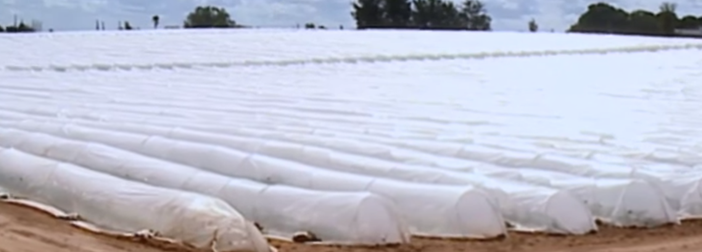

How India can be come a truly Farming Nation?
Water Resource Management
-
Proper Water Resource Management is the key
-
Water stored under the soil is only for the plants
- Entities living above the soil including human, birds, animals,.. should not have access to the under-the-soil water
- Obtaining water from drilling the land will reduce the water level to level where plants can't reach and result in death of those plants. This will result in deserts!
-
Stop importing petroleum oil
-
Start sharing water with every farmer, so each one can contribute the development of Ethanol and all required corps
-
Stop water getting wasted into Seas
-
Avoid Flood Irrigation : Drip Irrigation double/triple the yield
-
Collaborate with other Countries/Universities to move forward
-
Farming contribution to GDP () should be increased to more than 70% (2019 value: 12%, it was 68% in 1947, world average: 6.4%)
-
Stop importing vegetable oils like Palm oil
- Encourage the use of by local cultivation of the seeds and nuts required:
Speech by Mr. Nallaswamy about Water Resource Management in Tamil covering above points
Remember Gandhi!
Gandhi wanted to have an ideal society of his own imagination and his economic ideas are a part and parcel of his philosophical and sociological ideas. Gandhi is in favor of the self-sufficient village economy where the villages will be the independent economic units.
Learn from Israel's Agriculture and Water Management
- only 20% of the land is arable (suitable for growing crops)
- multiplied crop production by 16x from 1948
- has close cooperation between:
- farmers
- agro industry
- technological research (17% of total agriculture budget)
- self-sufficient (90%) with respects vegetables, fruits (other than tropical fruits: jackfruit, coconut)
Milestones

Mandarin growing - Intensive growing

Live stock - High yielding disease resisting cows

Modern irrigation
-
drip irrigation

-
jet irrigation

-
mobile sprinkler irrigation
-
spraying


- farm equipment made locally
-
Jews were not trained to be farmers but in Israel they made agriculture as the prime culture and industry with 9M population!
-
exports fresh produce and agriculture machineries to the world
-
water conservation is employed - plants are grown in tunnels of white plastic sheets with vent holes
-
hiring labors from Thailand for the farm work. Thai labors go back to Thailand they implement these technique in their homeland
-
cactus cultivation in large scale for leaves and fruits



Key Trees every Indian should grow
Moringa (Moringa oleifera) tree

- Botanical name :Moringa oleifera
Tamarind ( Tamarindus indica) tree

- Botanical name: Tamarindus indica
Neem (Azadirachta indica) tree

- Botanical name: Azadirachta indica
Curry tree

- Botanical name: Murraya koenigii

Moringa (Moringa oleifera) tree
- Botanical name :Moringa oleifera
Main Benefits
The diet of people in developing nations sometimes lacks essential nutrients: vitamins, minerals and protein. In these countries, malnutrition issues can be solved with help of Moringa.
One cup of fresh, chopped leaves (21 grams) has:
- Protein: 2 grams
- Vitamin B6: 19% of the RDA (Recommended Dietary Allowance)
- Vitamin C: 12% of the RDA
- Iron: 11% of the RDA
- Riboflavin (B2): 11% of the RDA
- Vitamin A (from beta-carotene): 9% of the RDA
- Magnesium: 8% of the RDA
One cup of fresh, sliced pods (100 grams) contains 157% of your daily requirement of Vitamin C.
Several antioxidant plant compounds have been found in the Moringa leaves. Moringa leaf extract may also be used as a food preservative. It increases the shelf life of fish and meat by reducing oxidation.
Other benefits (not fully proven)
- leaves may lead to reduced blood sugar levels.
- leaves may reduce Inflammation
- can lower cholesterol levels, potentially reducing the risk of heart disease
- may protect against arsenic toxicity
Documentary video
Video: Sowing, growing, harvesting, drying the leaves
Tamarind ( Tamarindus indica) tree
- Botanical name: Tamarindus indica
- The tree produces bean-like pods filled with seeds surrounded by a fibrous pulp.
- The pulp of the young fruit is green and sour. As it ripens, the juicy pulp becomes paste-like and more sweet-sour.
- It is used in sauces, marinades, chutneys, drinks and desserts. It's also one of the ingredients of Worcestershire sauce.
A single cup (120 grams) of the pulp contains:
- Magnesium: 28% of the RDI (Reference Daily Intake).
- Potassium: 22% of the RDI.
- Iron: 19% of the RDI.
- Calcium: 9% of the RDI.
- Phosphorus: 14% of the RDI.
- Vitamin B1 (thiamin): 34% of the RDI.
- Vitamin B2 (riboflavin): 11% of the RDI.
- Vitamin B3 (niacin): 12% of the RDI.
Main Benefits
- used to treat diarrhea, constipation, fever and peptic ulcers.
- polyphenols in tamarind have antioxidant and anti-inflammatory properties.
- can protect against diseases such as heart disease, cancer and diabetes.
- seed extract may also help lower blood sugar, while the pulp extract may help you lose body weight and reverse fatty liver disease
- pulp can also be used as a metal polish. It contains tartaric acid, which helps remove tarnish from copper and bronze.
- contains vitamins, minerals, amino acids and beneficial plant compounds. It also has a lot of sugar.
- contains plant compounds that may protect against heart disease and oxidative damage.
- contains a good amount of magnesium, an important mineral that plays a role in over 600 functions in the body.
Neem (Azadirachta indica) tree
- Botanical name: Azadirachta indica
Main Benefits of Neem leaves

- have ability to treat dandruff, soothe irritation, protect the skin, boost the immune system, and reduce inflammation.
- speeds up wound healing, treats gastric conditions, slows the aging process, improves hair and scalp health.
- has anti-cancer potential, and helps treat diabetes.
Curry tree
- Botanical name: Murraya koenigii
Curry tree fruits